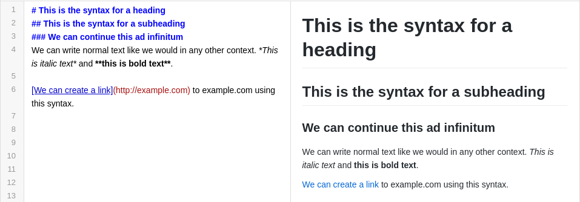
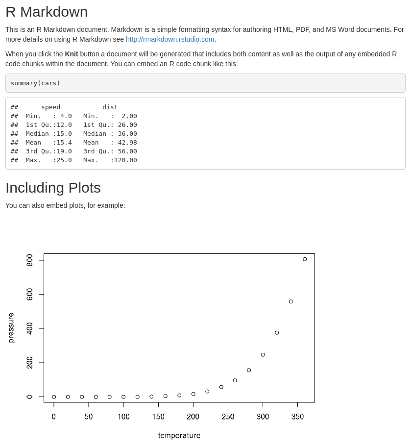
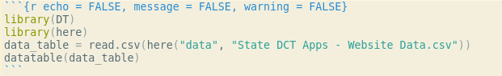

Chapter 3 RMarkdown Introduction
3.1 What is Markdown?
Markdown is a markup language that enables a user to type a certain syntax and always generate the same output documents. There are no hidden characters or special formatting, that you would inevitably encounter using a word processor, which could cause unwanted changes to appearance of a document. Please see the, “Markdown Introductory Tutorial” in the appendix - or click here - for a basic interactive tutorial. You can also see the, “Online Markdown Editor” link in the appendix - or click here - to experiment with Markdown editing in your web browser.
An example of Markdown text using the editor mentioned above is shown below.

3.2 What is RMarkdown?
RMarkdown is an extension of the Markdown markup language that allows the user to embed R code in Markdown documents. A markup language is a simple set of syntax that when written will always produce the same output document (as opposed to WYSIWYG editors). RMarkdown extends this by embedding R code into the documents, showcasing the source code, a R script’s output, and any figures generated by the R script.
Example of source code and output below.


3.3 R Code in RMarkdown
There are two ways to include R code in an RMarkdown document. The first is to simply inline the code in the document itself and compile the document. The second way is to load the code from a file instead of inlining in the document. Loading the code from a file provides a nice separation between the data processing and data presentation of a R script. The second method should be used if the R code is lengthy, complicated, or needs to be worked on independent of successful RMarkdown document compilation.
To load a R script from a file, simply add “code = readlines(”location_to_file“)” and specify the path to the file.

You can also embed and run R code by typing it in the code block instead of listing the location to a file. The following code snippet uses R libraries “here” and “DT” to display a csv file as an interactive table.

The following is how the table is rendered when RMarkdown outputs the document as an HTML file.